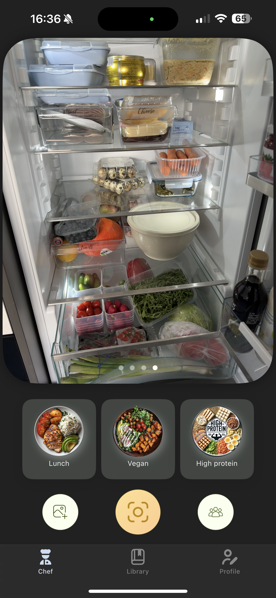
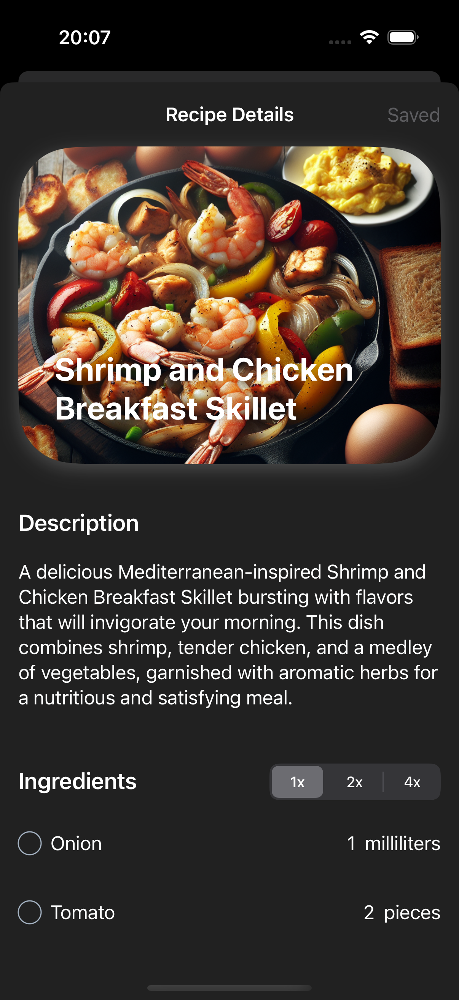
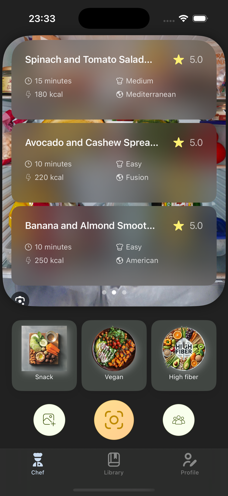
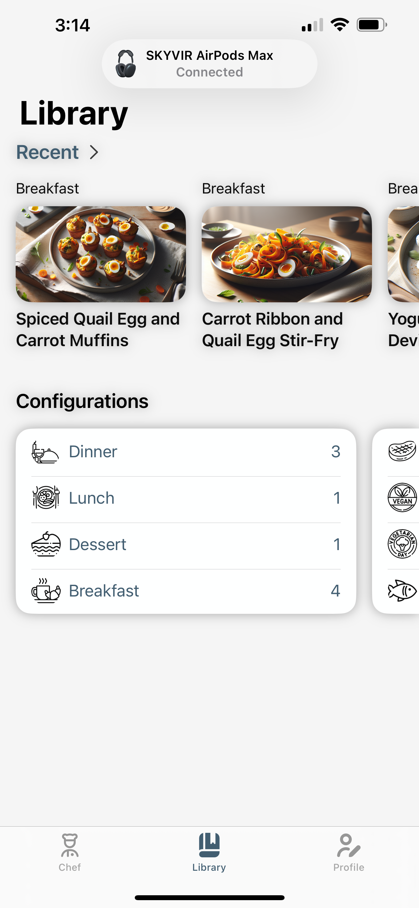

Your Camera, Your Kitchen Chef
Snap a photo of your ingredients and let AI instantly suggest delicious, personalized recipes based on what you have.

Recipe Found!
Perfect Pasta Primavera
Ingredients Identified
4 ingredients matched
How GeniChef Works
Snap a Photo
Take a picture of your available ingredients
AI Magic
Our AI analyzes and suggests perfect recipes
Start Cooking
Follow easy step-by-step instructions



Smart Features
Meal Configuration
Filter recipes by meal type, dietary restrictions, and fitness goals
Nutritional Insights
Get detailed nutritional information for every recipe
Time Saver
Quick recipes based on your available time and ingredients
Reduce Food Waste
Use ingredients you already have and minimize waste with smart suggestions
Get Inspiration
Discover new recipes and culinary ideas based on your preferences
Breakfast
Lunch
Dinner
Desserts
Vegetarian
Vegan
Dairy-free
Gluten-free
High Protein
Low Carb
Low Calorie
Heart Healthy
What Early Testers Say
GeniChef has transformed my weeknight cooking. No more staring at the fridge wondering what to make!
I've discovered so many new recipes based on ingredients I already had. This app is genius!
The nutritional insights have helped me stick to my fitness goals while enjoying delicious meals.
Being able to snap a photo of random ingredients and get recipe suggestions feels like magic. It's saved me so much time!
I've reduced my food waste dramatically since using GeniChef. Now I use ingredients before they go bad by finding creative recipes.